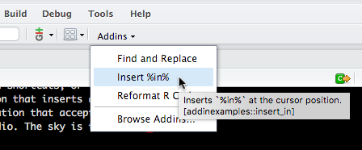
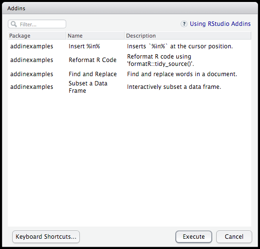
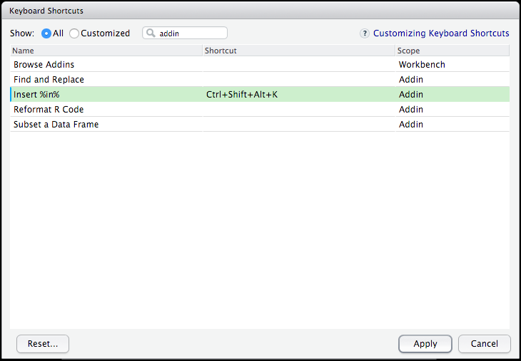

Overview
IMPORTANT NOTE: Support for addins is available only within the most recent release of RStudio (v0.99.878 or later). If you want to try out addins please be sure to download this release.
RStudio addins provide a mechanism for executing R functions interactively from within the RStudio IDE—either through keyboard shortcuts, or through the Addins menu.
An addin can be as simple as a function that inserts a commonly used snippet of text, and as complex as a Shiny application that accepts input from the user, and later mutates a document open in RStudio. The sky is the limit!
Here are two examples of addins in action (click on the thumbnail to see a brief demonstration):
{kind=link}
{kind=link}
Using Addins
This guide will walk you through the basics of installing addins, binding keyboard shorcuts to them, and finally developing your own addins.
Installation
RStudio Addins are distributed as R packages. Once you’ve installed an R package that contains addins, they’ll be immediately become available within RStudio.
Let’s start by playing around with a couple of the example addins provided by the addinexamples package. Within RStudio, install this package (plus its requisite dependencies) with:
devtools::install_github("rstudio/addinexamples", type = "source")Running Addins
After installing this package, you should see the Addins toolbar menu populated with the addins exported by this package:

Try clicking the Insert %in% addin – you’ll see the text %in% inserted at the cursor position.
The Addins menu displays up to 15 addins, if you have more than 15 installed you can access all of them via the Browse Addins… dialog:

Keyboard Shorcuts
Of course, it would be preferable to insert %in% through a keyboard shortcut rather than through clicking through a menu, so let’s learn how to bind this addin to a keyboard shortcut.
First, click Browse Addins… to explore all of the addins currently available.
At the bottom left of the dialog, you’ll see the Keyboard Shortcuts… button. Click this, and the Modify Keyboard Shortcuts widget will be opened, filtered to the current set of addins. Let’s bind Insert %in% to Ctrl + Alt + Shift + K – click on the ‘Shortcut’ field for the ‘Insert In’ addin row, and type those keys.

You’ve now bound this addin to a keyboard shortcut! Try typing Ctrl + Alt + Shift + K in the editor, and you’ll see %in% inserted at the cursor position. You can imagine generating a number of these addins yourself for other commonly used code snippets or operators.
Developing Addins
Addin Basics
You might be surprised to know that the Insert %in% addin is implemented entirely with R code. In fact, the R function that made this happen is located here, and its definition is simply:
insertInAddin <- function() {
rstudioapi::insertText(" %in% ")
}Try executing addinexamples::insertInAddin() directly at the console. You should also see %in% inserted immediately after executing the function. This is exactly what RStudio is doing behind the scenes; it’s just allowing you to execute that function through some UI rather than manually writing and executing the function yourself.
There are two major types of addins:
Text macros, which insert text into the console or source pane and in some cases transform text within the source pane. The
insertInAddinaddin defined above is an example of a text macro.Shiny Gadgets, which are fully interactive Shiny applications. Gadgets may also perform text transformations but they of course capable of much more.
More details on Shiny Gadgets are provided below, but first we’ll take a look at using the rstudioapi package (which allows us to interact with RStudio from R code) and then what it takes to install and register an addin.
RStudio API
The rstudioapi package allows you to interact with RStudio directly from the R code you write. You should install a recent (>= v0.5) version of the rstudioapi package to ensure you have access to all of the functions described below:
install.packages("rstudioapi", type = "source")For addins in particular, a number of methods were added that allow R code to introspect and mutate the contents of a document open in RStudio. These methods are outlined below briefly, but see documentation within the rstudioapi package for more details.
| getActiveDocumentContext() | Returns information about the currently active RStudio document. See below for more details. |
| insertText(location, text, id = NULL) | Insert text at a specific location within a document. |
| setDocumentContext(text, id = NULL) | Set the contents of a document open in RStudio. |
The list returned from getActiveDocumentContext() provides the following information about the active RStudio document:
- id — The unique document id.
- path — The path to the document on disk.
- contents — The contents of the document.
- selection — A list of selections.
The id can be passed to other functions within the API to address a specific document instance rather than the currently active document. Even though it’s optional, it’s highly recommended that you use the id parameter to ensure that you modify the document that was active when your addin was invoked.
The location argument to several of the API functions specifies a position or range to operate on. See the rstudioapi manual for more details on specifying locations.
Registering Addins
Since addins are just R functions, how does addinexamples let RStudio know what functions are safe to call as addins? This is done through the registration file located at inst/rstudio/addins.dcf. Each addin you register should have the following four fields:
- Name: The name of the addin.
- Description: A description of the addin.
- Binding: The R function this addin is associated with.
- Interactive: Whether this addin is interactive (e.g. runs a Shiny application).
For example:
Name: Insert %in%
Description: Inserts `%in%` at the cursor position.
Binding: insertInAddin
Interactive: falseIf you want to create your own RStudio addins, all you need to do is:
- Create an R package,
- Create some R functions, and
- Create a file at
inst/rstudio/addins.dcf,
RStudio will automatically discover and register these addins when your package is installed. Note that you can register as many addins as you like within a single addins.dcf file, just be sure to insert a blank line between each addin that is registered.
Execution Modes
The Interactive field within the addin registration describes whether the addin is interactive or non-interactive. It’s important to understand when an addin should be declared as interactive versus non-interactive, as this effects how RStudio will attempt to execute the addin:
Interactive addins are invoked by emitting a call to their function directly into the R console. For addins that display user-interface (e.g. using a Shiny application) this enables users to stop/interrupt them.
Non-interactive addins are run in the background and can not be interrupted, so it’s imperative that these addins complete execution quickly. Otherwise, it’s possible that your addin could freeze the user’s R session.
The use case for non-interactive addins is typically simple text insertion or transformation, in which case users would be annoyed if each invocation resulted in code being inserted into the console.
Shiny Gadgets
Shiny gadgets are Shiny applications which can be registered and run as addins. Typically, a Shiny Gadget provides a mechanism for interactively generating code, or modifying a document, but within this realm the possibilities are endless. This article demonstrates how you might create a simple Shiny Gadget, for more complete documentation see the following articles on the Shiny Developer Center:
Shiny Gadgets are similar to regular Shiny applications. You will need to develop a ui and a server for your gadget, and then use the runGadget() function to launch your gadget.
Shiny Gadgets require recent versions of the shiny (v0.13) and miniUI (v0.1.1) packages from CRAN so you should be sure to install them before developing your addin. You can do this as follows:
install.packages(c("shiny", "miniUI"), type = "source")Gadget UI
The UI for a Shiny Gadget can be generated using functions from the miniUI package. Typically, the UI definition of a Shiny Gadget will have the following form:
ui <- miniPage(
gadgetTitleBar("My Gadget"),
miniContentPanel(
## Your UI items go here.
)
)If you’re unfamiliar with how the UI for a Shiny application can be generated, please check out Shiny UI Lesson to get further acquainted with how the UI for a Shiny application might be developed.
Gadget Server
The server function used for a Shiny Gadget is similar to one as provided for a regular Shiny application, except with the requirement that your application must respond to the done event. For example,
server <- function(input, output, session) {
## Your reactive logic goes here.
# Listen for the 'done' event. This event will be fired when a user
# is finished interacting with your application, and clicks the 'done'
# button.
observeEvent(input$done, {
# Here is where your Shiny application might now go an affect the
# contents of a document open in RStudio, using the `rstudioapi` package.
#
# At the end, your application should call 'stopApp()' here, to ensure that
# the gadget is closed after 'done' is clicked.
stopApp()
})
}Gadget Viewer
After you’ve defined the ui and server for your Shiny gadget, you can choose what kind of viewer you would like your application to run in. Currently, there are three options available:
paneViewer(): Launch your Shiny Gadget within the RStudio Viewer pane. This is useful for gadgets that want to run without obscuring other windows in the RStudio IDE, but such applications should require only a minimal amount of space (as the viewer may be small on the user’s computer).
dialogViewer(): Launch your Shiny Gadget as a modal dialog within the RStudio IDE. Use this when your gadget requires a large amount of screen real estate, but is not heavy-weight enough to require a separate window.
browserViewer(): Launch your Shiny gadget in a separate window. Use this for large Shiny gadgets that require a large amount of real estate, and perhaps are more complex than applications that could fit comfortably within an RStudio modal dialog.
Putting It Together
Let’s combine the above components into a simple ‘Hello Shiny’ gadget. We’ll create a clock that updates its display every second. Try running the following code in RStudio – you should see a clock displayed in the viewer pane. When you click Done, the current time will be inserted at the cursor position.
library(shiny)
library(miniUI)
# We'll wrap our Shiny Gadget in an addin.
# Let's call it 'clockAddin()'.
clockAddin <- function() {
# Our ui will be a simple gadget page, which
# simply displays the time in a 'UI' output.
ui <- miniPage(
gadgetTitleBar("Clock"),
miniContentPanel(
uiOutput("time")
)
)
server <- function(input, output, session) {
# Set some CSS styles for our clock.
clockStyles <- paste(
"border: 1px solid #DADADA",
"background-color: #EFEFEF",
"border-radius: 5px",
"font-size: 6em",
"margin-top: 60px",
"text-align: center",
sep = "; "
)
# We'll use a 'reactiveTimer()' to force Shiny
# to update and show the clock every second.
invalidatePeriodically <- reactiveTimer(intervalMs = 1000)
observe({
# Call our reactive timer in an 'observe' function
# to ensure it's repeatedly fired.
invalidatePeriodically()
# Get the time, and render it as a large paragraph element.
time <- Sys.time()
output$time <- renderUI({
p(style = clockStyles, time)
})
})
# Listen for 'done' events. When we're finished, we'll
# insert the current time, and then stop the gadget.
observeEvent(input$done, {
timeText <- paste0("\"", as.character(Sys.time()), "\"")
rstudioapi::insertText(timeText)
stopApp()
})
}
# We'll use a pane viwer, and set the minimum height at
# 300px to ensure we get enough screen space to display the clock.
viewer <- paneViewer(300)
runGadget(ui, server, viewer = viewer)
}
# Try running the clock!
clockAddin()
# Now all that's left is sharing this addin -- put this function
# in an R package, provide the registration metadata at
# 'inst/rstudio/addins.dcf', and you're ready to go!Congratulations! You’re now ready to write your own Shiny gadgets. Additional documentation on creating Gadgets is available at the Shiny Developer Center:
Installation
Creating addins with Shiny Gadgets requires recent versions of the shiny (v0.13), miniUI (v0.1.1), and rstudioapi (v0.5) packages from CRAN. You should therefore add these packages (along with their required versions) to your package DESCRIPTION file as follows:
Imports:
shiny (>= 0.13),
miniUI (>= 0.1.1),
rstudioapi (>= 0.5)More Examples
The addinexamples package contains several additional examples of Shiny Gadget based addins:
Find and Replace — Find and replace words in a document.
Reformat R Code — Reformat R code using
formatR::tidy_source().Subset a Data Frame — Interactively subset a data frame.